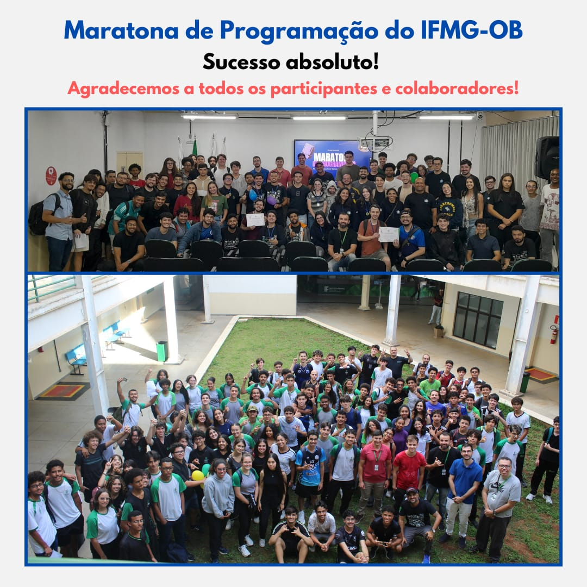

💡 Convidado Especial

Participação de Lucas Pellegrinelli Engenheiro de Software na Google e ex-aluno do IFMG campus Ouro Branco.
Agradecemos a todos os participantes, organizadores e parceiros por tornarem a Maratona de Programação do IFMG Ouro Branco um sucesso!
XX
XX
XX
A Maratona de Programação é um evento que visa promover o conhecimento técnico científico por meio da realização de atividades que mobilizam habilidades de resolução de problemas e de colaboração. Pode ser vista como uma forma de estudantes se desafiarem, evoluírem em seus conhecimentos e de confraternização entre entusiastas.
A Maratona de Programação do IFMG Campus Ouro Branco é organizada por docentes e discentes da área de Computação da instituição. O objetivo é promover uma competição de programação em equipes. Segue o modelo de competições internacionais como a ICPC, testando os conhecimentos de algoritmos, estruturas de dados e raciocínio lógico. Os problemas são contextualizados, multidisciplinares e exigem criatividade, trabalho em equipe, organização de tempo e estratégia.
Participação de Lucas Pellegrinelli Engenheiro de Software na Google e ex-aluno do IFMG campus Ouro Branco.
Reviva os melhores momentos do evento! Baixe e compartilhe suas fotos da Maratona 2025.
Acessar FotosFaça o download do seu certificado digital de participação na Maratona de Programação.
Baixar CertificadoAgradecemos imensamente aos nossos parceiros por apoiarem a edição 2025 da Maratona de Programação do IFMG campus Ouro Branco!
Apoio na alimentação e infraestrutura do evento.